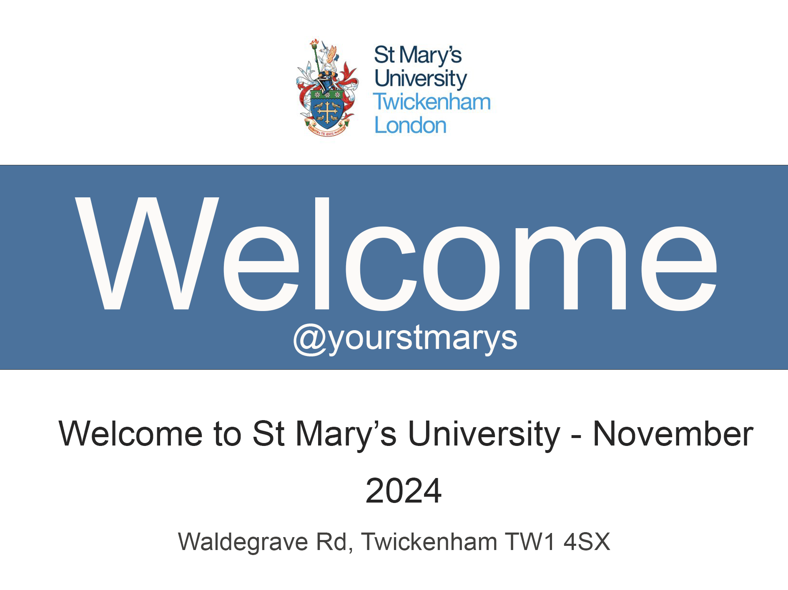

St Mary's Open Day November 2024
Welcome and Introduction
Before the Open Day (Checklist and Tips)
How to Get to St Mary’s
Campus Maps
Arrival Points
Book Tickets for Talk & Tour
Accommodation
Food and Drink
Twickenham Life
FAQs
Open Day Feedback Survey
Share with Friends to Join Open Day
Register for Open Day Now